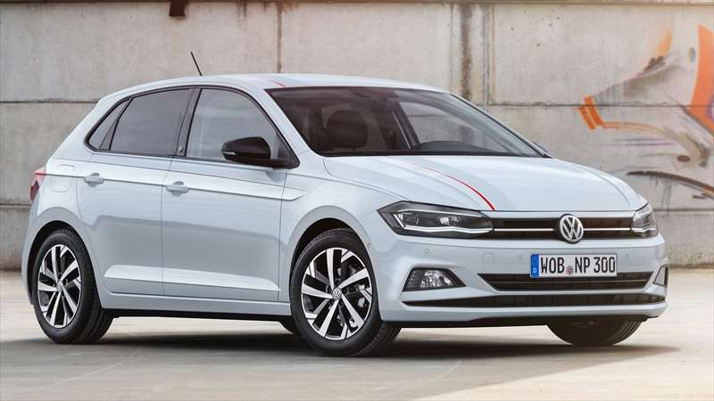
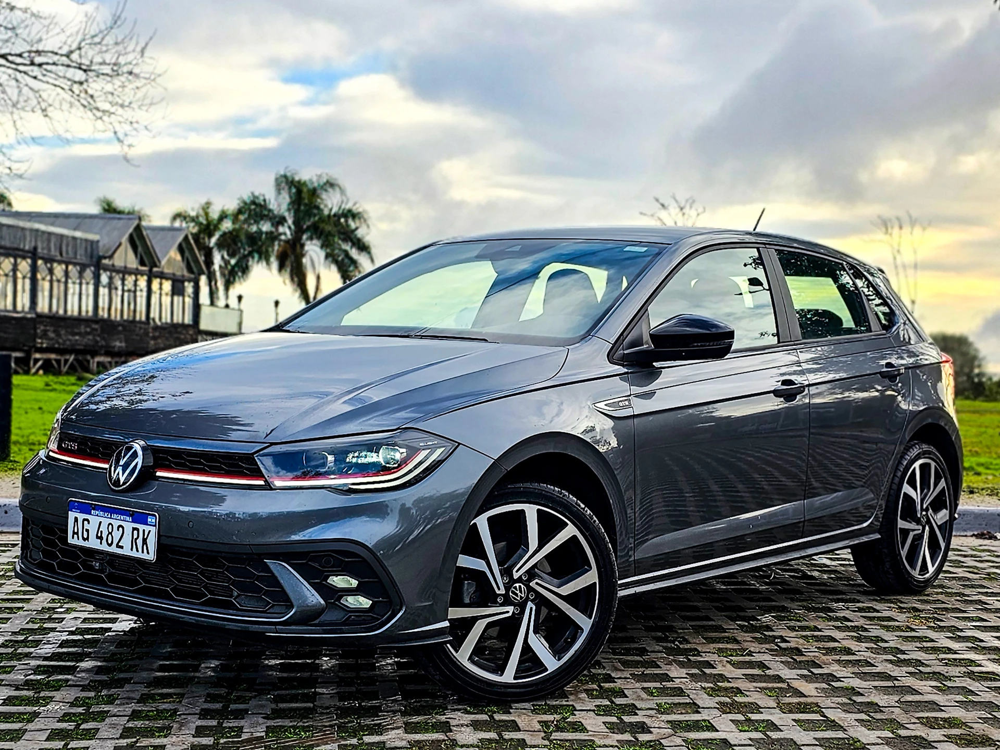
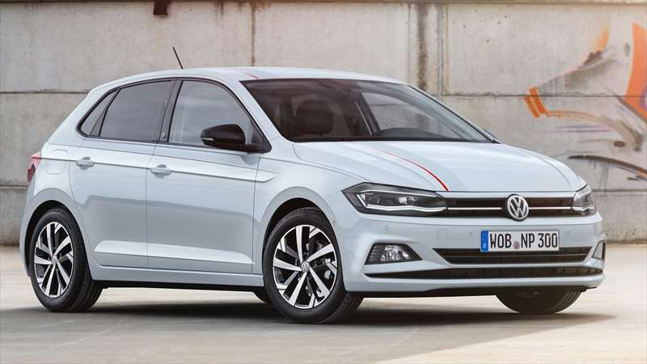
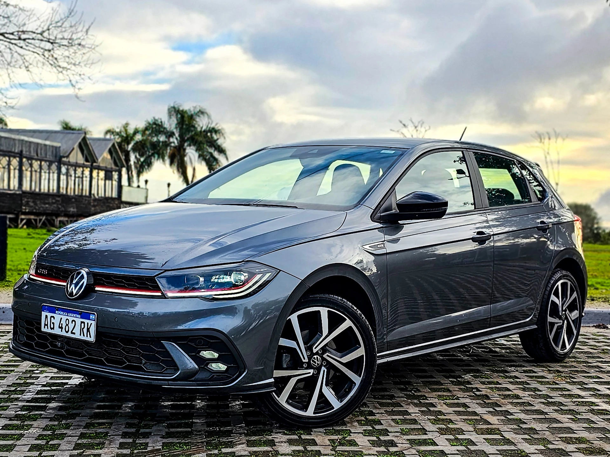

Diseños:
Variantes del Volkswagen Polo GTS
El Polo GTS es una versión deportiva y de alto rendimiento del Volkswagen Polo, un automóvil muy popular en Europa y otras regiones. El diseño del Polo GTS no está atribuido a una sola persona, ya que es el resultado del trabajo de equipos de diseño e ingeniería de Volkswagen. Sin embargo, el diseño general del Polo (incluyendo la versión GTS) ha sido influenciado por el lenguaje de diseño de la marca, que ha evolucionado a lo largo de los años bajo la dirección de diversos jefes de diseño de Volkswagen. Uno de los nombres más destacados en el diseño de Volkswagen es Walter de Silva, quien fue el jefe de diseño del Grupo Volkswagen entre 2007 y 2015. Durante su mandato, se establecieron las bases del diseño moderno de Volkswagen, caracterizado por líneas limpias, proporciones equilibradas y un enfoque en la elegancia atemporal. Aunque De Silva no diseñó personalmente el Polo GTS, su influencia en el diseño de la marca es innegable. El Polo GTS se distingue por detalles deportivos, como un cuerpo más aerodinámico, llantas de aleación específicas, detalles en negro y rojo, y un interior con acabados deportivos. Estas características son desarrolladas por equipos de diseño especializados en modelos de alto rendimiento dentro de Volkswagen. En resumen, el diseño del Polo GTS es el resultado del trabajo colectivo de los equipos de diseño de Volkswagen, influenciado p or la filosofía de diseño establecida por figuras como Walter de Silva.
 


